Latest navigation designs: Back/Forward arrows are the preferred direction. Compare four arrow treatments, their states and small-window layouts. The prior alternate navigation concepts have been removed. A visual variant is still unselected; earlier images below remain for context.
All proposals
- Reading workspace
- Edit content in place
- Workspace menus
- Document menus
- Search opened
- Search results
- Narrow reading — 640 × 480
- Settings
- HTML and CSS viewing
- File links
- Linked-file access
- Image history — retained original
- Other-file details and history
- New: narrow editing — 640 × 480
- New: save and recovery states
- New: light enlarged Spanish Settings
Reading workspace
Keep hierarchy and neutral status; normalize Projects label. Embedded file-history controls remain unapproved.
Open full SVG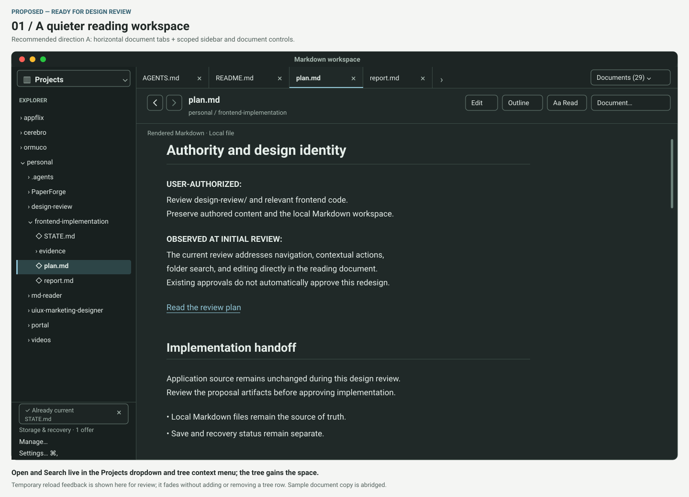
Edit content in place
Make recovery location and Save returning to reading explicit; see state board 15 for failure/exit cases.
Open full SVG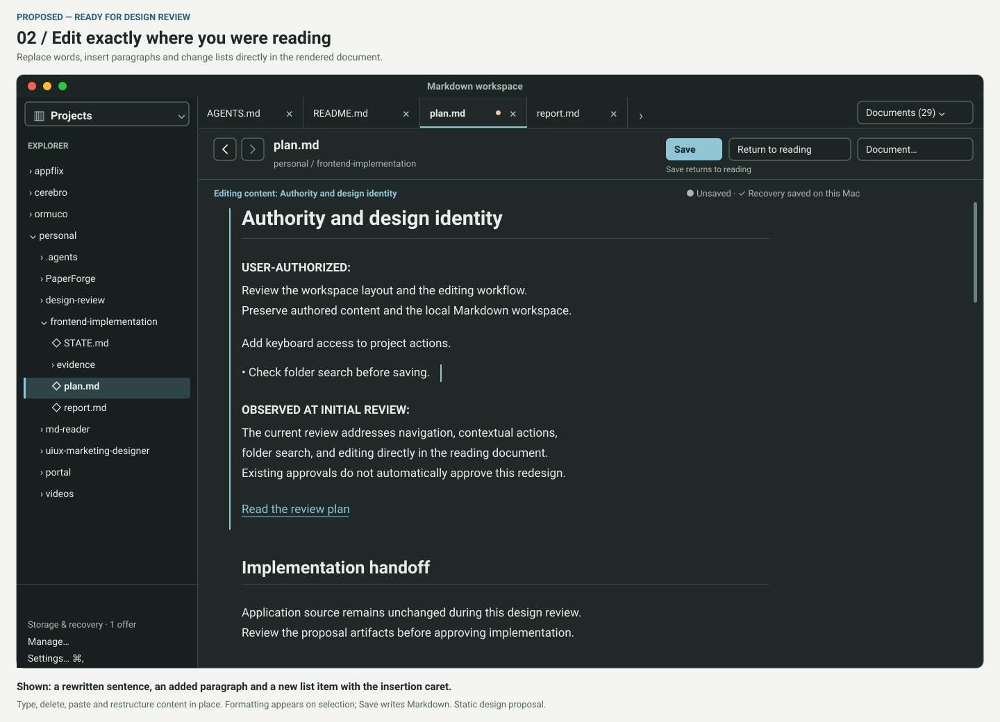
Search opened
Both selected on opening, checkmark, query-required reason and honest contents coverage.
Open full SVG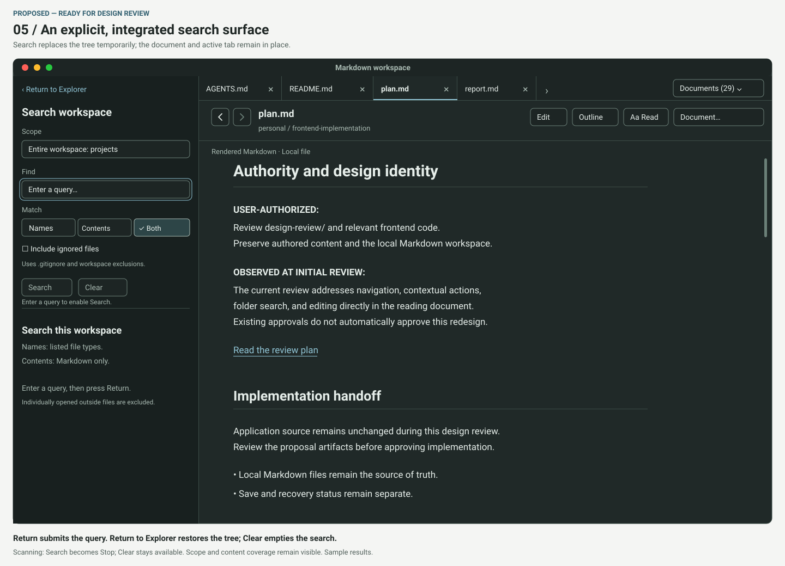
Search results
Scan finished with skipped-file disclosure, grouped hit preview and explicit Markdown-only contents.
Open full SVG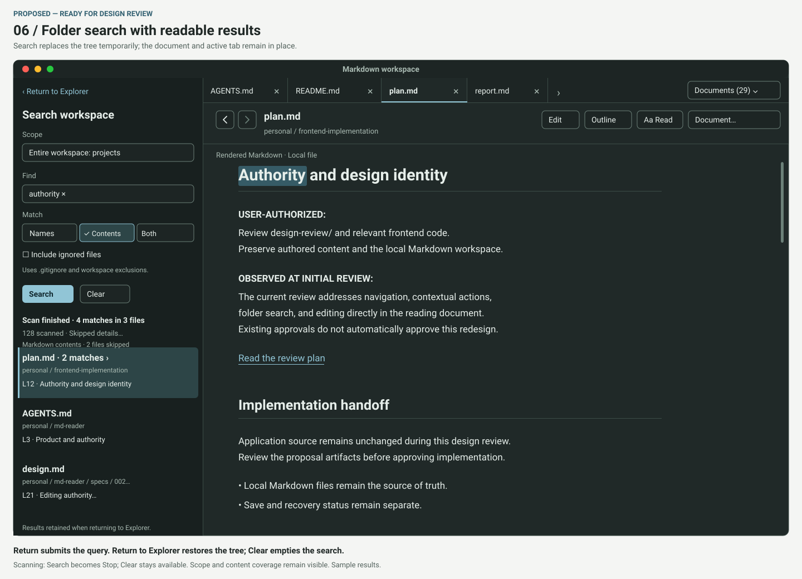
Narrow reading — 640 × 480
Exact reference window with separate action row. Embedded file-history controls remain unapproved.
Open full SVG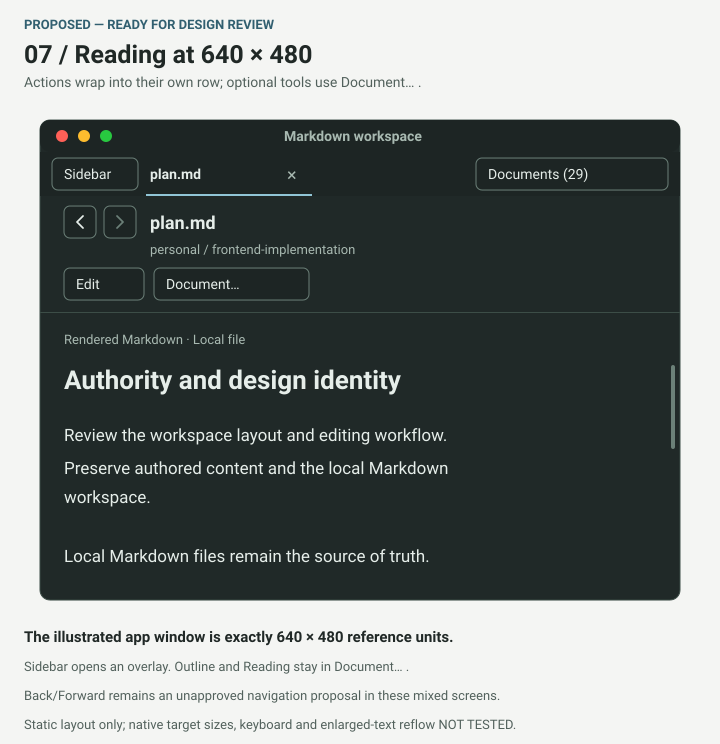
Settings
Filter helper now includes HTML; preference groups and supported values retained.
Open full SVG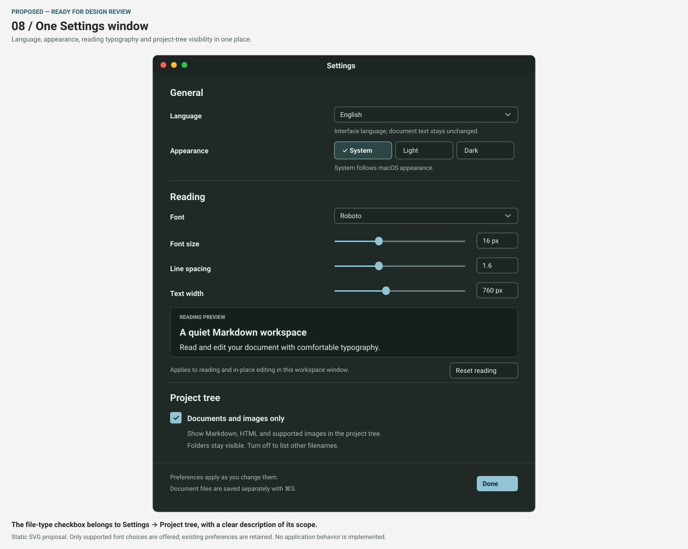
HTML and CSS viewing
Authored styling preserved; caption separates viewing from unapproved file navigation.
Open full SVG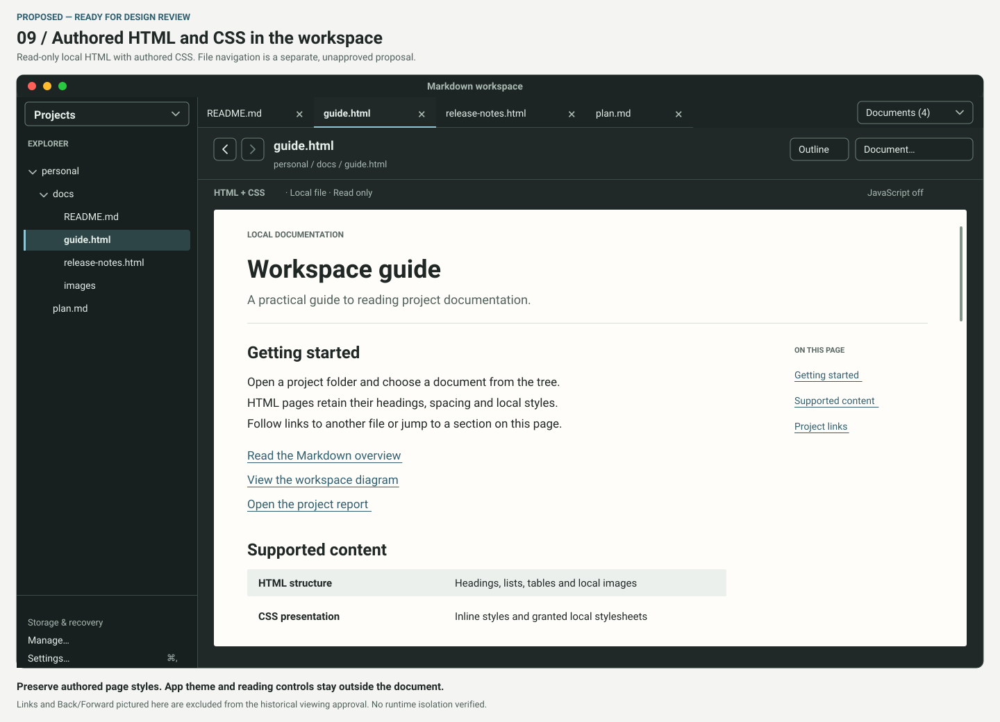
File links
Navigation remains unapproved; Return is menu activation, not an assigned command shortcut.
Open full SVG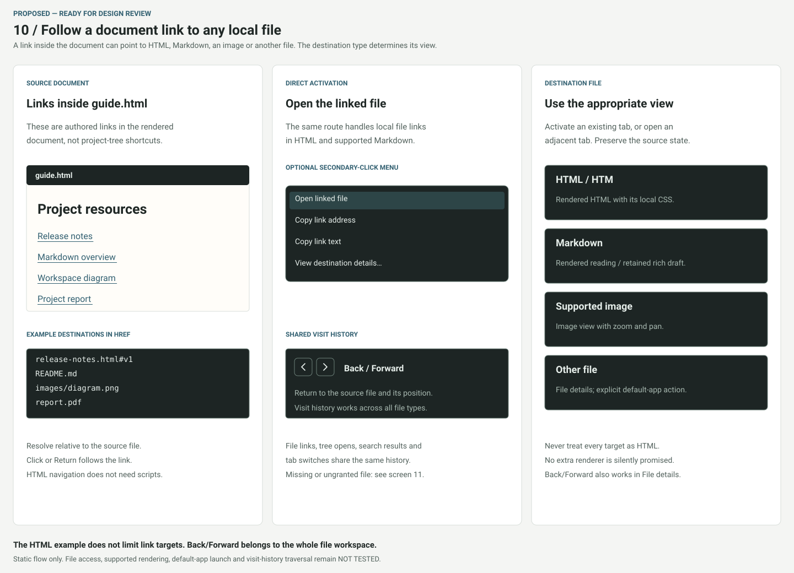
Linked-file access
Navigation remains unapproved; resolved path, Cancel initial focus, picker/mismatch recovery specified.
Open full SVG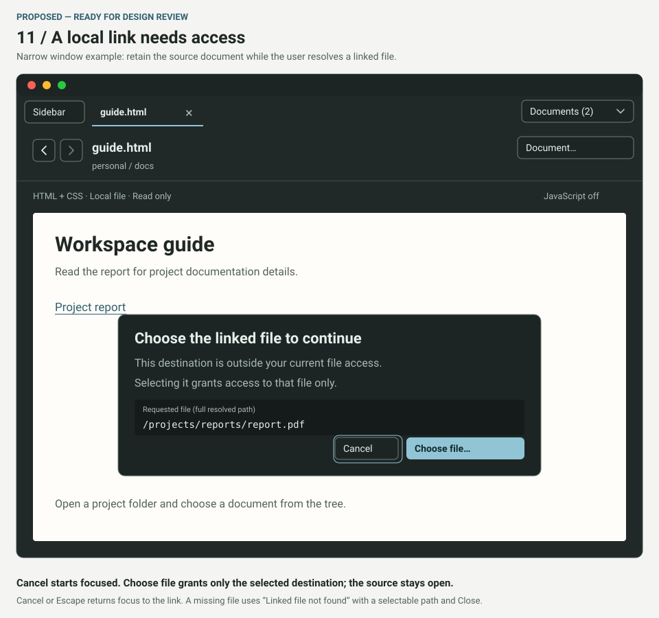
Image history — retained original
Retained byte-for-byte after critique. Entire navigation proposal remains unapproved.
Open full SVG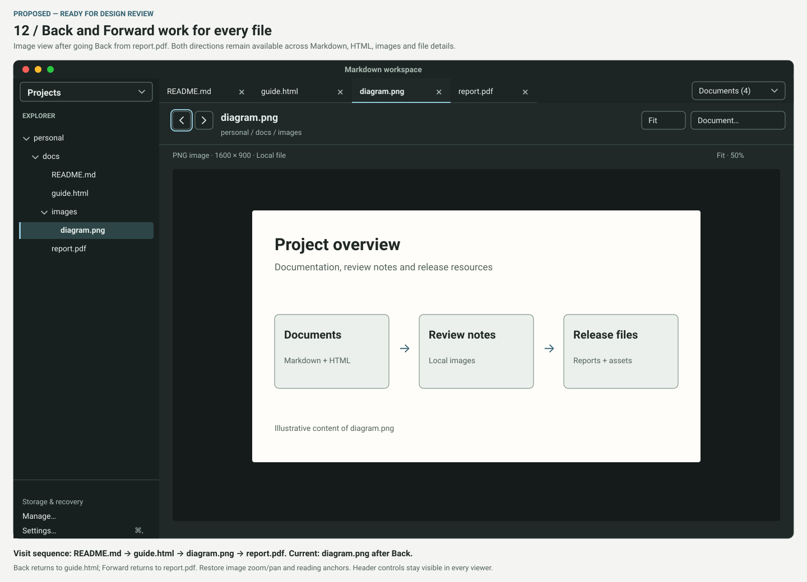
Other-file details and history
Navigation remains unapproved; new shortcuts unassigned; Preview is an illustrative known handler.
Open full SVG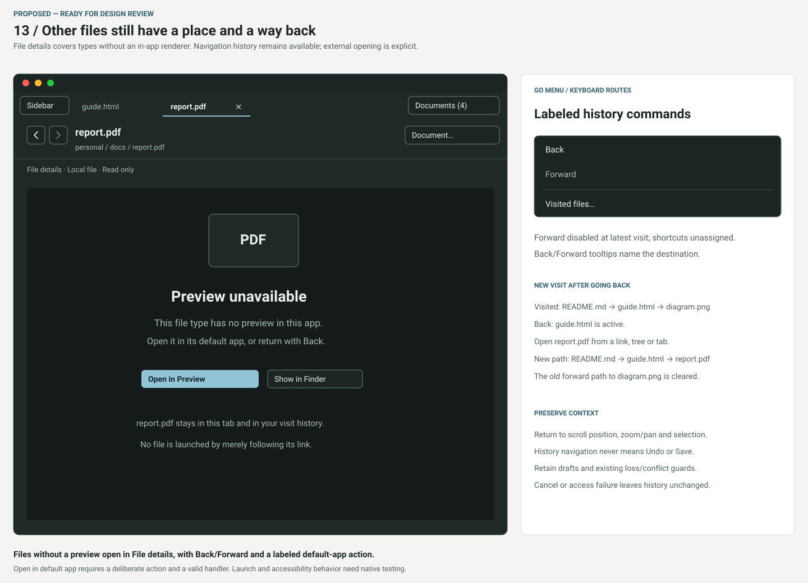
New: narrow editing — 640 × 480
Reviewable action/status wrapping with Save, Return to reading and Document… .
Open full SVG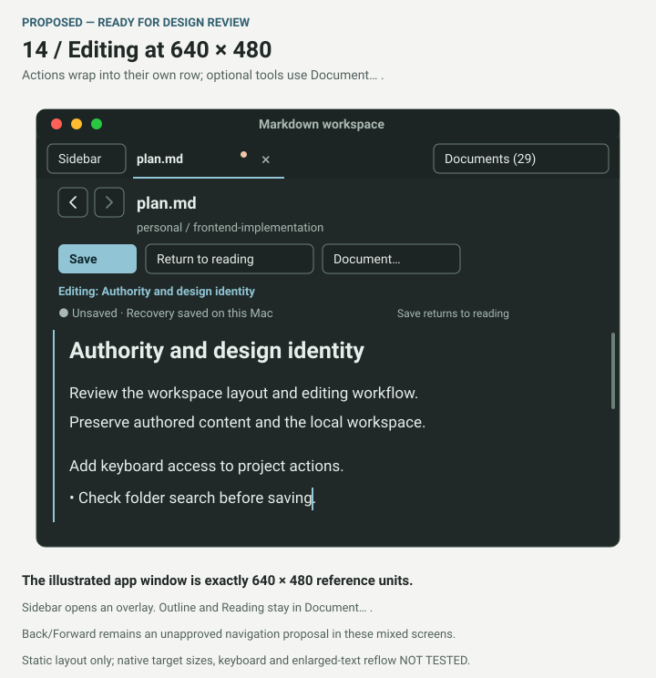
New: save and recovery states
Clean edit, recovery failure, disk conflict and dirty exit. These static states are proposed.
Open full SVG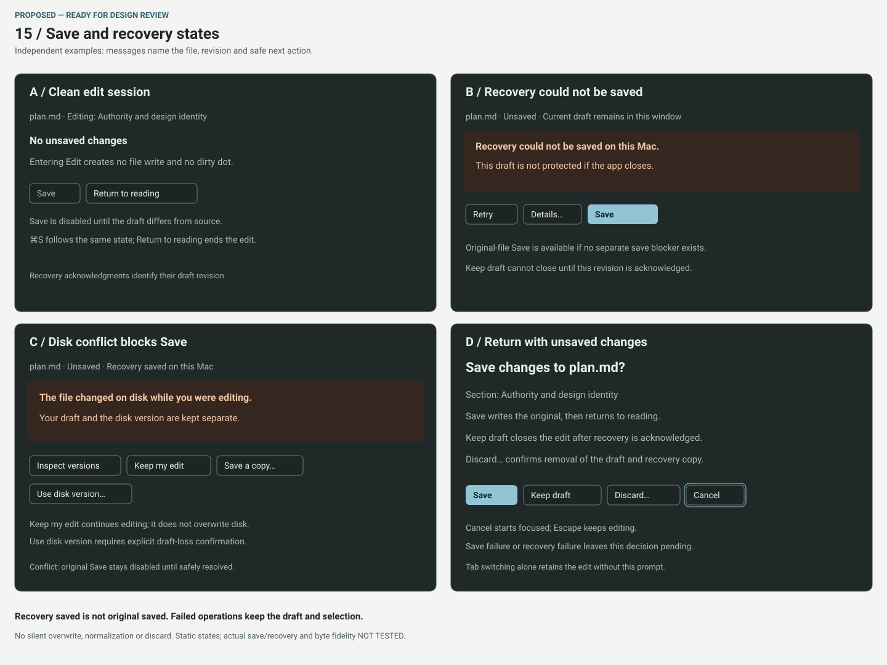
New: light enlarged Spanish Settings
560 × 640 composition with larger text, stacked labels and a scrolling body; actual reflow NOT TESTED.
Open full SVG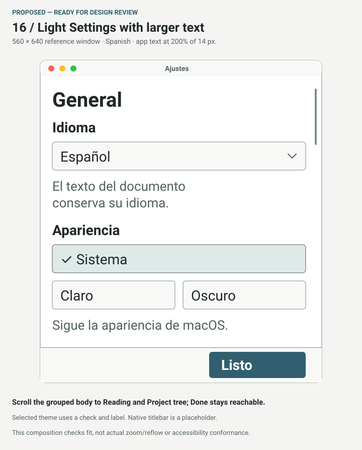